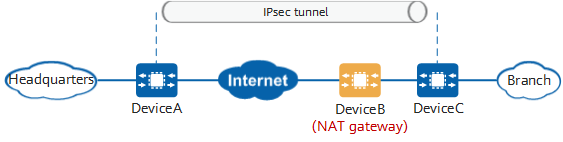

Configuring IPsec NAT Traversal
Context
In Figure 1, DeviceB functions as a NAT gateway between two devices (DeviceA and DeviceC) that establish an IPsec tunnel. This scenario is also called IPsec NAT traversal. The branch, as the negotiation initiator, is located on a private network. It sends negotiation packets across the Internet through DeviceB to negotiate and establish an IPsec tunnel with the responder (headquarters). To ensure that negotiation packets can pass through the NAT gateway, you need to enable NAT traversal on the devices (DeviceA and DeviceC) at both ends of the IPsec tunnel.


During the IPsec NAT traversal configuration, the IPsec security protocol used in an IPsec proposal must be Encapsulating Security Payload (ESP). Authentication Header (AH) authenticates the entire IP packet. Any modification in the IP header will cause an AH check failure. Address translation will cause IP address changes. Therefore, an IPsec tunnel protected by AH cannot pass through a NAT device.
ESP does not check the IP header. If only address translation is performed, the IPsec tunnel protected by ESP can pass through a NAT device. ESP is a Layer 3 protocol and has no port number. Therefore, ESP cannot apply to NAT that allows port translation. To address this issue, NAT traversal encapsulates ESP packets with a UDP header for transmission through a NAT device. In transport mode, a standard UDP header is inserted between the original IP header and an ESP header during NAT traversal. In tunnel mode, a standard UDP header is inserted between the new IP header and an ESP header during NAT traversal. When ESP packets pass through a NAT device, the NAT device translates the IP address and port number of the outer IP header and inserted UDP header. After the translated packets reach the remote end of the IPsec tunnel, the remote end processes these packets in the same manner as IPsec packets.
NAT session entries on a NAT device have the aging time. If no packets pass through the NAT device for a long period of time after an IPsec tunnel is established, the NAT device will delete the corresponding NAT session entry. As a result, data of the IKE peer on the public network side of the NAT device cannot be transmitted. To prevent the NAT session entry from being aged, the device on the private network side of the NAT device sends NAT keepalive packets to the remote end at a specified interval to maintain the NAT session.
Procedure
- Enter the system view.
system-view - Configure the port number used for IPsec NAT traversal.
ipsec nat-traversal source-port port-number [ port-number2 ]
By default, the port number used for IPsec NAT traversal is 4500.
- Configure the NAT keepalive interval.
ike nat-keepalive-timer interval interval
By default, the NAT keepalive interval is 20 seconds.
- Enter the IKE peer view.
ike peer peer-name
- Enable NAT traversal.
nat traversalBy default, NAT traversal is enabled.